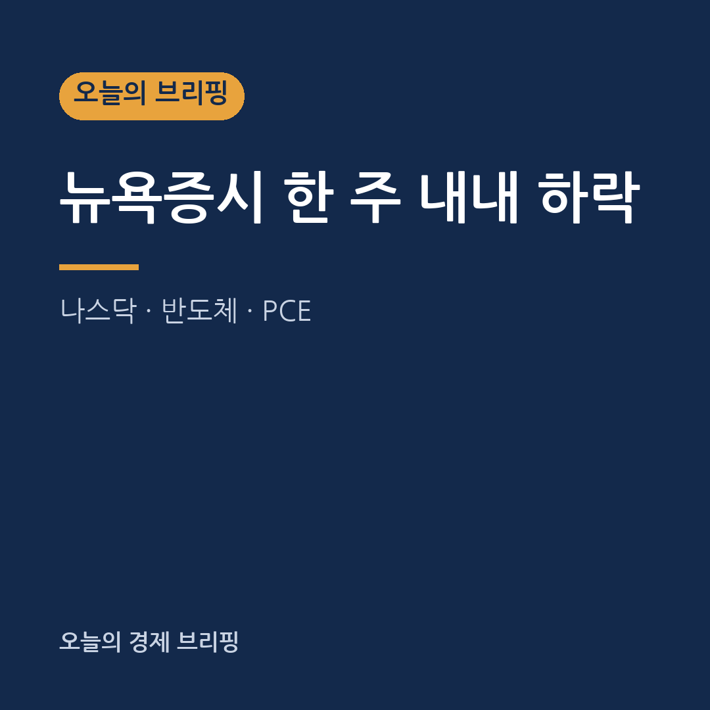
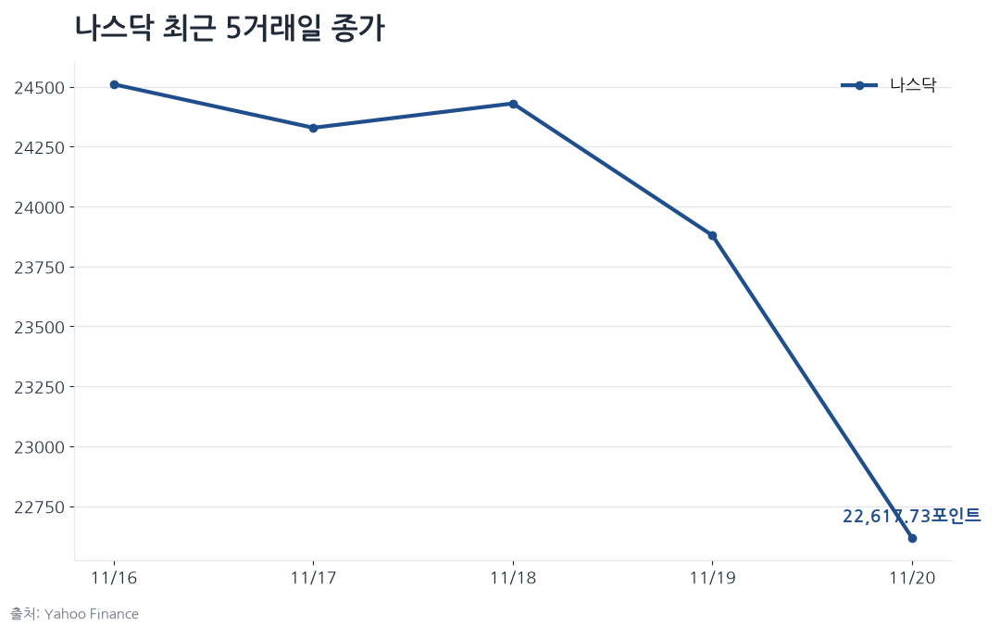

2026-11-22-0810-naver 발행 키트 · 이 페이지는 검색에 노출되지 않습니다.
제목
카테고리
오늘의 브리핑태그
본문 (그림·표 포함)
휴대폰 블로그 앱에서는 그림이 같이 붙지 않을 수 있어요. 그때는 [글자만 복사] 후 아래 이미지를 저장해 [그래프1]·[표1] 자리에 첨부하세요.

주말 지나고 월요일 장 준비하시는 분들, 지난 금요일 뉴욕이 어땠는지 한 번에 정리해 드릴게요.
▶ 한 줄 총평 금요일 하루만 흔들린 게 아니라 한 주 내내 밀린 끝에 마무리가 가장 컸어요.
▶ 금요일(20일) 마감 성적 나스닥은 22,617.73으로 5.28% 내렸고, S&P500은 6,910.39로 3.70% 내렸어요. 다우는 48,147.33으로 1.93% 하락했는데, 필라델피아 반도체지수는 8,408.59로 10.73%나 빠졌어요.
11월 20일 미국 증시·시장 지표 마감
| 항목 | 마감 | 전일 대비 |
|---|---|---|
| S&P500 | 6,910.39 | -3.70% |
| 나스닥 | 22,617.73 | -5.28% |
| 다우 | 48,147.33 | -1.93% |
| 필라델피아 반도체 | 8,408.59 | -10.73% |
| 미 국채 10년물 금리 | 4.91% | -0.14%p |
| 원·달러 환율 | 1,334.79원 | +0.33% |
| WTI 유가 | 83.98달러 | +0.93% |
출처: Yahoo Finance
▶ 한 주 흐름으로 보면 이번 주 월요일인 16일 종가와 비교하면 나스닥은 약 7.7%, S&P500은 약 6.8% 내려온 셈이에요. 반도체지수는 같은 기간 약 12.5% 떨어졌고요. 직접 계산한 값이라 참고용으로 봐 주세요.

▶ 왜 이렇게 흔들렸을까요 가장 많이 나온 이야기는 AI 대장주들이 흔들리면서 "AI가 정말 돈을 벌 수 있느냐"는 의심이 커졌다는 거예요. 월가 유명 인사 한 명이 시장의 기대치 조정이 불가피하다고 말했다는 보도도 있었어요. 여기에 미 연준 쪽에서 금리를 더 올려야 한다는 목소리가 나왔다는 보도까지 겹쳤어요.
▶ 환율·금리·유가는요 미 국채 10년물 금리는 5.05%에서 4.91%로 내려갔어요. 주식이 크게 빠진 날 금리는 오히려 내렸네요. 원·달러 환율은 1,334.79원으로 4.39원 올랐고, WTI 유가는 83.98달러로 0.77달러 올랐어요.
▶ 이번 주 우리 증시에서 볼 것 다음 주(23~27일)는 미국 물가 지표인 PCE(개인소비지출 물가지수)가 분수령이라는 전망이 나와요. 골드만삭스가 다음 주에도 매도세가 이어질 수 있다고 본다는 보도도 있었어요. 월요일 아침 반도체주 움직임과 환율이 1,330원대에서 버티는지 먼저 확인해 보세요.
오늘 브리핑 한 줄 정리: 주가가 빠진 날에도 숫자는 차분하게 확인하는 게 먼저예요.
여러분은 이번 주 장세를 어떻게 보세요? 댓글로 의견 남겨 주세요.
출처 (본문 맨 아래에 붙여넣기 권장)
- 연합뉴스, [뉴욕증시-주간전망] AI 투매에 흔들린 월가…PCE 물가 분수령, https://www.yna.co.kr/view/AKR20261122004800009 - 서울파이낸스, 골드만삭스, 다음주도 뉴욕증시 매도세 지속 전망···"패닉지수 9점", https://news.google.com/rss/articles/CBMiakFVX3lxTE04ZVV4NXBNSG9LMzQ3NFd3Z3Zib3k0WkpSLUswQ2JoQUJ6V21FMHZXaVlBLTVDZ09GazRJYjlPX2hrWXFpRWJKV2RiSTZWUlNHbG5ZS1loM3lzeHdIUGh6Z0ZtcDZZaWFhdUE?oc=5 - 파이낸셜뉴스, 뉴욕증시 매도세, 5대 배경은…제러미 시걸 "기대치 조정 불가피", https://news.google.com/rss/articles/CBMiWkFVX3lxTE5NUWJZOHB1Z05ZeS15QTlUMEhzTlkzSmtFallGYlByc2ZsREw3UDd2QjZXbktsWk5mdlhNVFVGMEUwTnhXSmhScDllb3VzRlpac0FkdUxTRGVmZw?oc=5 - 더스쿠프, 나스닥 올해 상승분 반납…미 연준 "금리 더 올려야", https://news.google.com/rss/articles/CBMibkFVX3lxTE1MLXlpVUNrRS1ZTDR3NUFPdTMxSVF3LUxoNGJXUFg4UUhDZW1rWkEtanpaNURkRnh3cEVRNlppOXJvRFNRTGw0T0pSNjg2Q2ZCT3VhRE9uR2xKaFlkVllUTlV3eWpLRTVzMTNQY2JB?oc=5 - YTN, 수익성 시험대 오른 AI...대장주 추락에 뉴욕증시 '패닉', https://news.google.com/rss/articles/CBMiXkFVX3lxTE9MdEVmSUkzNGYwUnBPVHFIWUhzRjN6RWJfWV9wWm4wd1UybElRbVBPbVFkZC1xVWRWaFZNY2ZJay1sZmU2LWJtT3dLbG1NOFF5R0I5V0U3N3hieE9naWc?oc=5 - 시세: Yahoo Finance